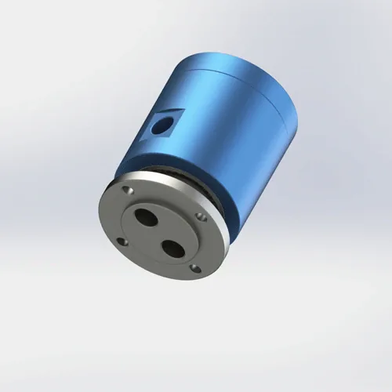

誰がこれのためにいるのか: 包装機械 OEM、真空システム デザイナーおよび食品機器メーカーは、回転式真空包装ラインを構築します。
真空包装の場所は頻繁に真空の抽出、肯定的な空気吹込み、クランプ作動および1つの回転機械区域のシーリング動きを結合します。
マルチ流路 ロータリーユニオンは、これらの回路を分離し、真空レベル、空気作動、およびリリースタイミングが回転中に一貫して維持します。

典型的な条件回転式包装のタレット、シーリング頭部および袋の処理場所のための空気および真空の回転式移動。ターゲット真空、漏れ耐性、真空および圧力ラインが隔離されているかどうかを確認します。
包装機械は通常頻繁に周期を、従ってシール寿命およびホース サポートは見直しるべきです。
食糧か洗浄区域は選択の前に特別な材料およびシーリング確認を必要とするかもしれません。
| 機械区域 | 共通の機能 | 選択の焦点 | Begapunkの方向 |
|---|---|---|---|
| 回転式袋機械 | 真空抽出およびクランプ空気 | 流路の分離および反復可能なシーリング | BP-2P か BP-3P |
| 真空シールヘッド | 真空プラスリリース空気 | 低い漏出および密集した土台 | 2P空気/真空 ロータリーユニオン |
| 回転式袋の処理場所 | 吸引のコップの真空および吹込み | 真空安定性とポート配置 | BP-3Pかカスタム設計 |
機械レイアウト、媒体、圧力、流路の計算、RPM、ポートのサイズおよび土台スペースを送って下さい。 Begapunkはインターフェイスを見直し、適した標準かカスタム 空気圧ロータリージョイントを提案できます。
はい。 真空 用途 は共通ですが、漏出許容、シール の構造および ポート配置 は確認されなければなりません。
はい、流路を別々にすると、ロータリーユニオンは必要な圧力と真空レベルのために選択されます。